A music wheel that sits on the edge of your screen. Drag a record off it and it becomes a 3D cube you can spin, with a different face on every side.
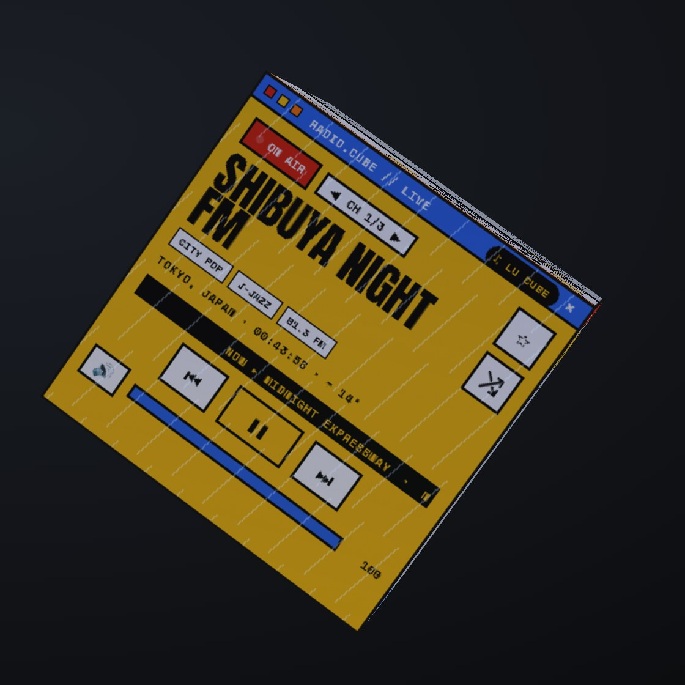
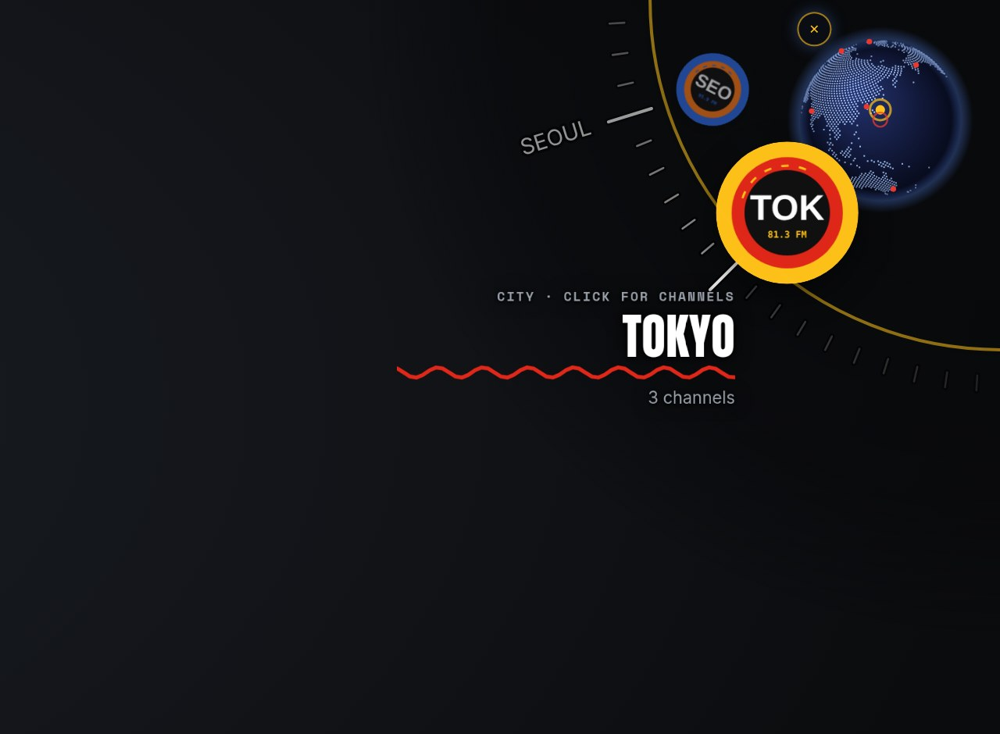
Turn the cube to whichever face you need and it settles upright. Every button works right on the face: play, skip, scrub, pick a playlist.
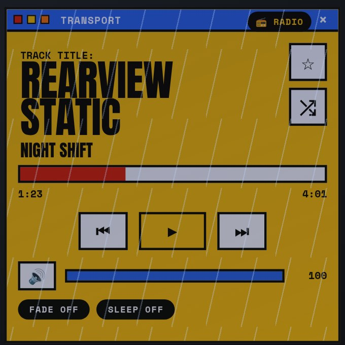
TransportPlay, skip, scrub, volume, crossfade and a sleep timer.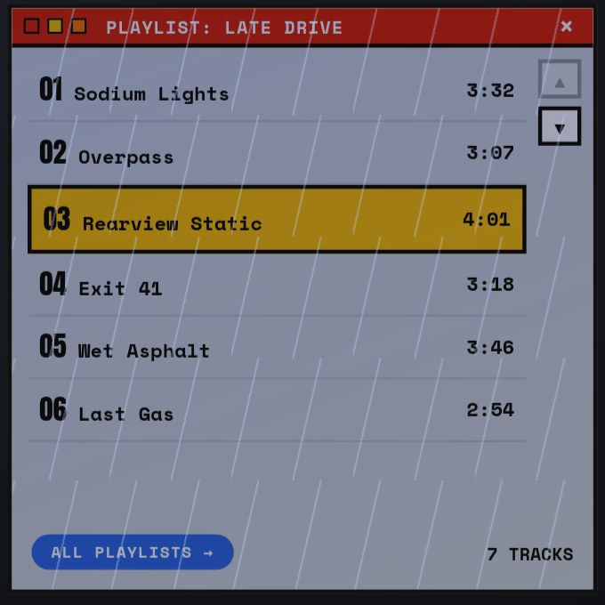
PlaylistEvery song in the playlist; tap one to play it.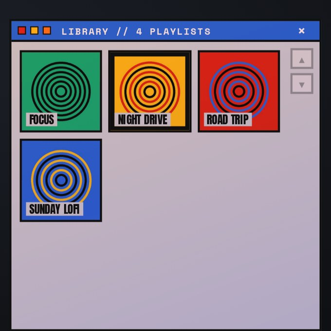
LibraryAll your playlists. Each folder of music is one..lrc file next to a song for synced lyrics.One key flips the whole cube from your music to live radio. A line of light sweeps across every face. Whatever you were listening to waits there, paused, until you flip back.
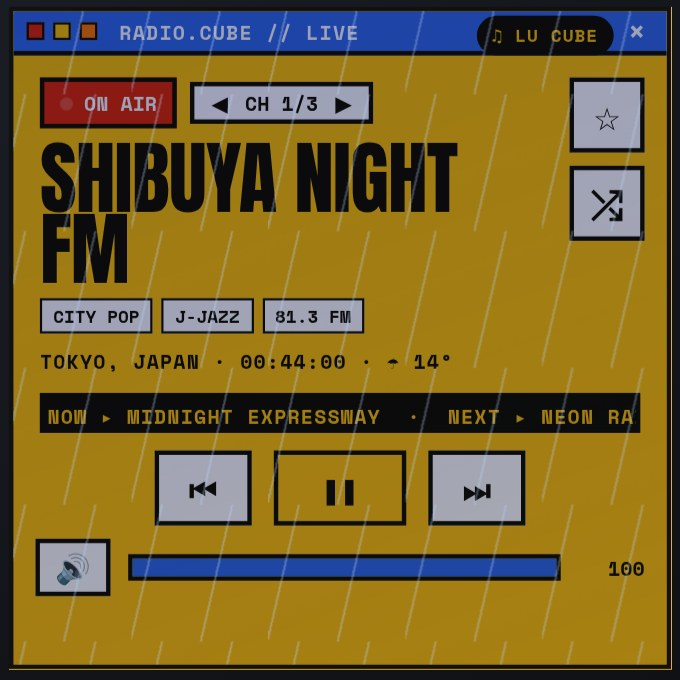
On airThe station, its genres, local time and weather there, and the song it's playing.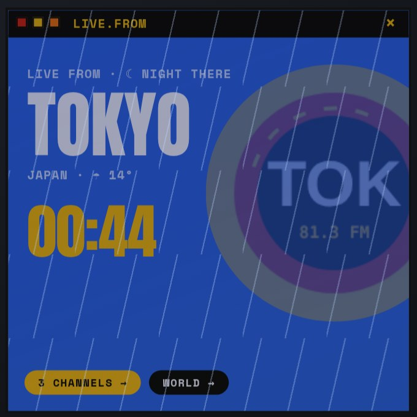
Live fromWhere you're listening, and whether it's night or day there.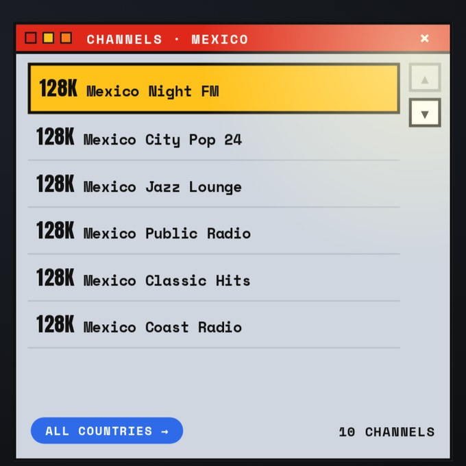
ChannelsEvery station for that country. Save favourites with a star.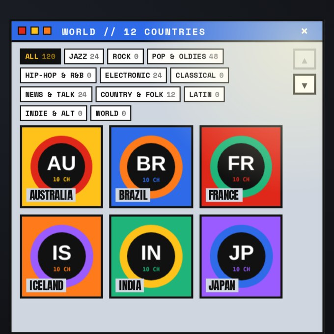
World + genresFilter the whole world by jazz, rock, classical, news and more.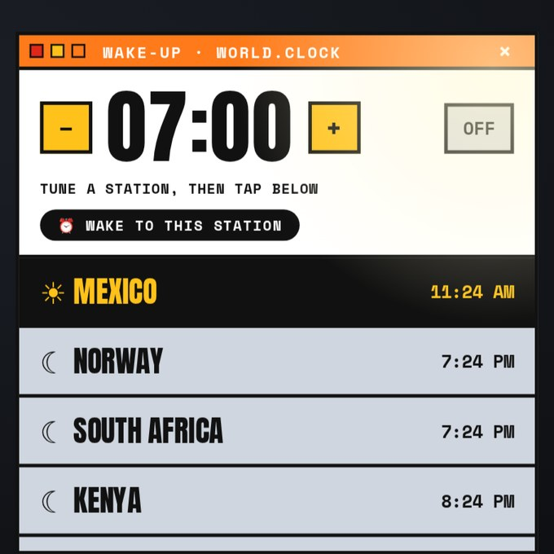
Wake-upWake up to any station, fading in. World clocks below.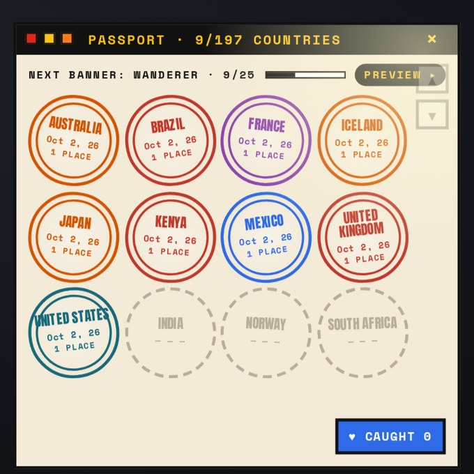
PassportA stamp for every country you tune into.Stations come from the free radio-browser.info directory. Radio needs the internet; your own music never does.
Every country you listen to gets a stamp. Reach 25, 75, 150 and finally all 197 countries to earn a permanent banner under the volume bar. Each banner also unlocks a new skin for the cube.
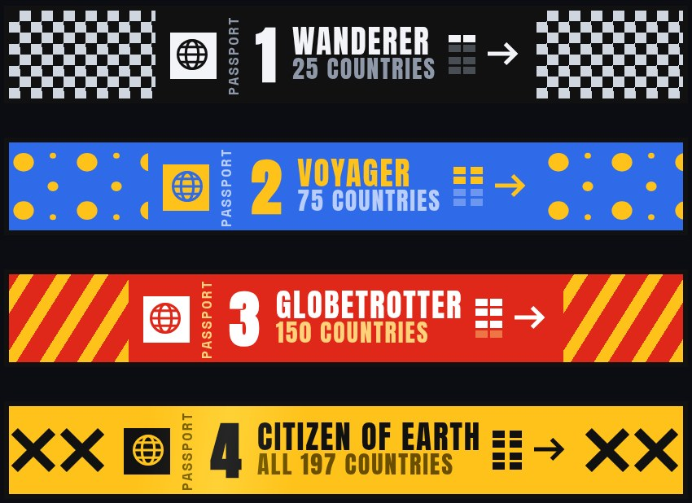
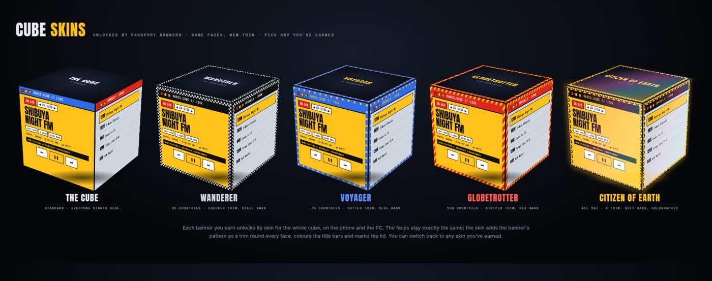
The same cube and the same faces, on Android now (iPhone later). It plays through the phone's own audio system, so the lock screen, headphones, car and Bluetooth controls all work.
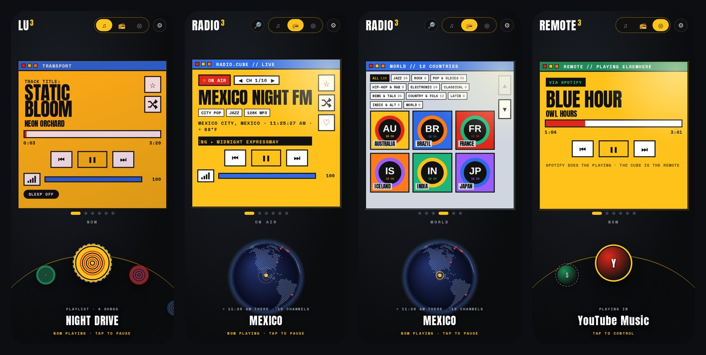
Music (each folder is a playlist), or run Get Classical Music.bat / Get Lofi Music.bat for free music.Lu Cube Desktop.bat for the floating cube, or Lu Cube.bat for a window.Windows 10 or 11. If Python isn't installed, Lu Cube downloads its own portable copy (about 11 MB); the desktop cube downloads Electron once (about 100 MB). Make Lu Cube Stick.bat puts it on a USB stick for a friend. Set Weather Town.bat sets your town.
Android 7 or newer, about 6 MB. New versions install over the old one and keep your settings. To copy songs from your PC, run Phone Sync.bat on the PC and tap ⚙ → Sync on the phone (same Wi-Fi). iPhone: later.